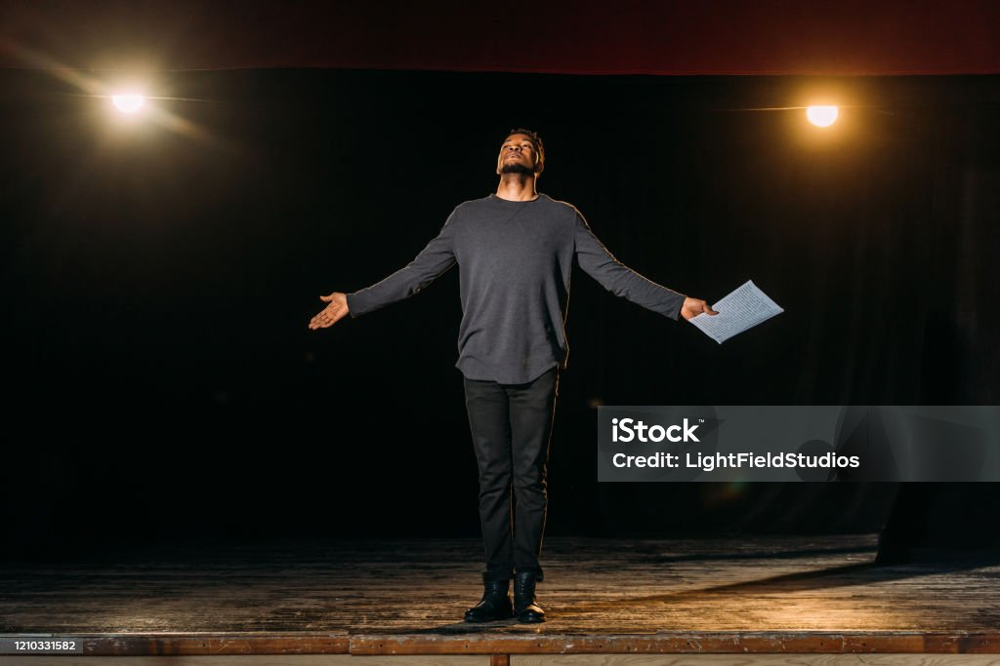
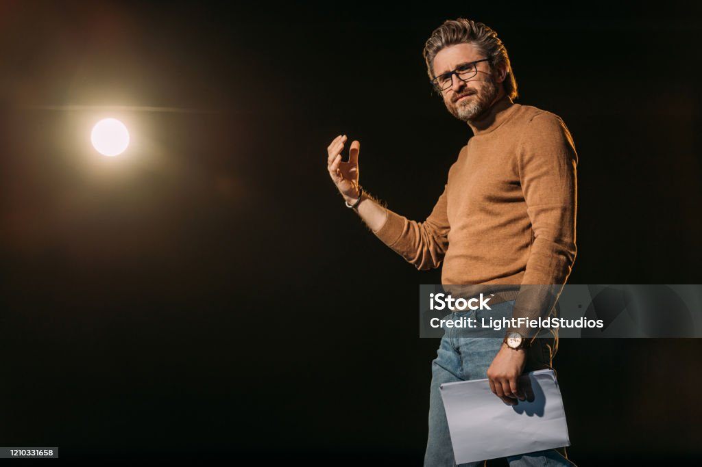
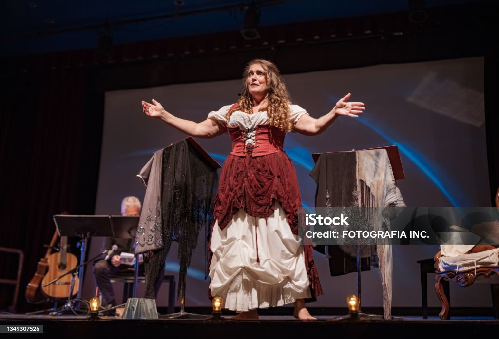

Дмитрий Назаров
Родился 4 ноября 1954 года в Москве. Выпускник ГИТИСа. Известен ролями в театре и кино, особенно в фильмах "Свой среди чужих, чужой среди своих" и "Бригада".
Чулпан Хаматова
Родилась 1 октября 1975 года в Казани. Окончила школу-студию МХАТ. Прославилась благодаря ролям в театре "Современник" и фильмах "Восемь известных свиданий", "Дневной дозор".

Сергей Безруков
Родился 18 октября 1973 года в Сергиеве Посаде. Выпускник Щукинского театрального училища. Широко известен за роли в театре и популярных теле- и кино проектах, таких как "Бригада" и "Анна Каренина".

Нина Усатова
Родилась 8 ноября 1955 года в Улан-Удэ. Окончила ГИТИС и дебютировала в театре. Знамена своими ролями в театре и таких фильмах как "Бандитский Петербург" и "Любовь и голуби".